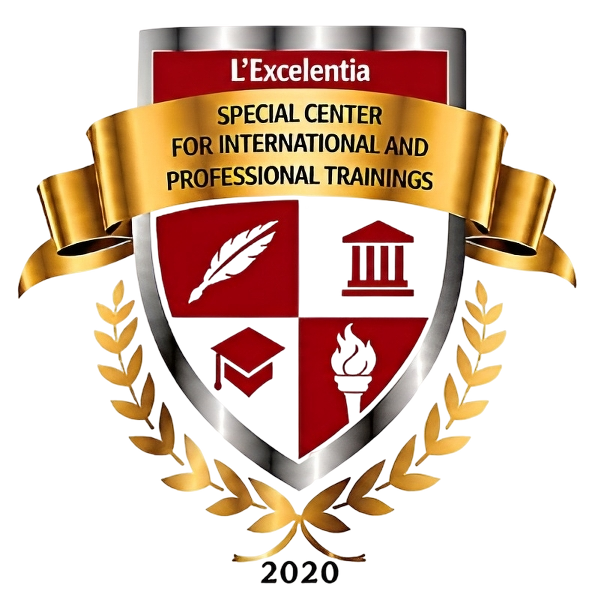

Des parcours progressifs
Un choix de niveau et de formation à préciser selon le diplôme antérieur et le projet de l’apprenant.

SCIPT INTERNATIONALCENTRE SPÉCIAL DES FORMATIONSSCIPT INTERNATIONAL réunit des parcours universitaires et des formations professionnelles pour accompagner les projets d’études, de spécialisation et d’évolution de carrière.
La mission de SCIPT INTERNATIONAL est de rendre accessible une éducation de qualité, ouverte à l’innovation et attentive aux compétences utiles dans la vie professionnelle.
Notre vision est de faire dialoguer enseignement supérieur, formation aux métiers et collaborations internationales. Chaque apprenant peut ainsi construire un parcours cohérent avec son niveau, ses ambitions et ses perspectives.
Relier les savoirs aux situations concrètes, accompagner les choix d’orientation et donner à chacun les moyens de progresser.
Le site institutionnel décrit une pédagogie modulaire qui associe cours, mise en pratique, stages et projets selon les programmes. L’objectif est que les acquis puissent être mobilisés dans un contexte réel.
Un choix de niveau et de formation à préciser selon le diplôme antérieur et le projet de l’apprenant.
Des activités et projets orientés vers l’application des connaissances, selon la filière suivie.
Des échanges avec l’équipe pour comprendre les admissions, les modalités d’études et les perspectives du parcours.
Choisissez d’abord votre voie, puis découvrez les écoles et les formations qui y sont rattachées.

Des niveaux d’études et des domaines de recherche organisés autour de quatre écoles, dont l’École Doctorale Internationale SCIPT.
Explorer les écoles →Des formations pratiques rattachées à trois écoles : droit et gestion, sciences et technique, santé et développement.
Explorer les formations →Dans sa présentation institutionnelle, le fondateur défend des programmes modulaires, une place importante accordée à la pratique et un accompagnement adapté aux projets des étudiants.
Cette ambition s’appuie sur des enseignants et professionnels de différents domaines, ainsi que sur une ouverture aux partenariats académiques et aux expériences internationales.
Faire de la régularité et de l’engagement des moteurs de progression.
Viser une maîtrise approfondie des connaissances et des gestes professionnels.
Avancer vers un objectif d’études ou de métier clairement défini.
Notre équipe peut vous aider à choisir une école, comprendre les conditions d’accès et obtenir les informations financières validées pour votre formation.